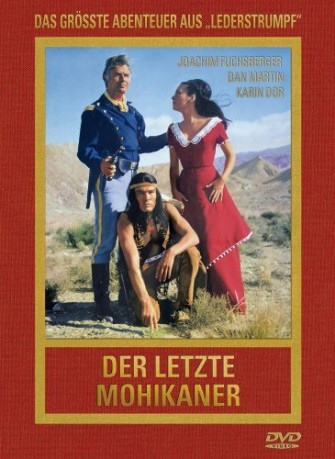

#7862 Letzte Mohikaner - Holzauge sei wachsam
Alternativ: The Last Tomahawk (Englischer Titel)
 
 IMDB-Wertung: 5.5 / 10
IMDB-Wertung: 5.5 / 10  Metascore: 0
Metascore: 0 
As Alice and Cora Munro attempt to find their father, a British officer in the French and Indian War, they are set upon by French soldiers and their cohorts, Huron tribesmen led by the evil Magua. Fighting to rescue the women are Chingachgook and his son Unkas, the last of the Mohican tribe, and their white ally, the frontiersman Natty Bumppo, known as Falkenauge.
Jahr: 1965
Dauer: 87 Minuten
FSK: 12
Land: West-Deutschland Studio: Constantin FilmTonspuren:
Untertitel:
Auflösung: 1080p (1920x816) Größe: 6717 MB
Genre: Western
Regisseur: Harald Reinl
Drehbuch: James Fenimore Cooper
Soundtrack: Peter Thomas
Darsteller:
- Joachim Fuchsberger als Captain Bill Hayward
 Karin Dor als Cora Munroe
Karin Dor als Cora Munroe- Kurt Großkurth als Koch
- Daniel Martín als Unkas
- Anthony Steffen als Falkenauge
 Frank Braña als Corporal (uncredited)
Frank Braña als Corporal (uncredited)- Rafael Hernández als Roger's Henchman (uncredited)
- Marie France als Alice Munroe
- Carl Lange als Colonel Munroe
- Ricardo Rodríguez als Magua
- Mariano Alcón als Tamenund (uncredited)
- Víctor Bayo als (uncredited)
- Mike Brendel als Chingachgook (uncredited)
- Stelio Candelli als Roger (uncredited)
- Carlos Deschamps als Jackson (uncredited)
- Martín Díaz als (uncredited)
- Cris Huerta als Fat Soldier (uncredited)
- Jean-Claude Mathieu als Matt (uncredited)
- Antonio Montoya als (uncredited)
- Leandro San José als (uncredited)
- Ángel Ter als Jeff (uncredited)
Datei: X:\HD-Western-1960-1979\Letzte Mohikaner - Holzauge sei wachsam (1965, FSK12, 1920x816).mkv seit 29.12.2017
Festplatte: HD Eastern+Western
 Es gibt insgesamt 110 Filme in der Gruppe 'HD-Western-1960-1979'
Es gibt insgesamt 110 Filme in der Gruppe 'HD-Western-1960-1979'